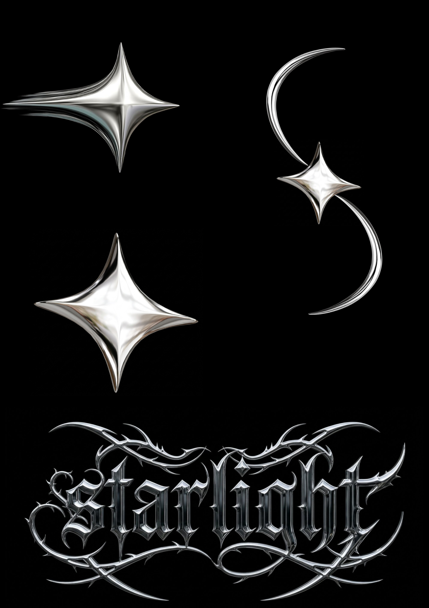

Starlight
A visual identity concept featuring metallic elements and a distinctive wordmark.
Project Overview
Starlight is a brand identity design created as part of the CEEL 301 Graphics Design activities. The concept explores the use of visual symbols, typography, and metallic effects to create a recognizable identity.
Design Concept
The design features metallic silver star and crescent elements combined with a gothic-inspired wordmark. A dark background provides contrast and emphasizes the visual elements.
Design Elements
- Star and crescent motifs
- Metallic silver visual effects
- Gothic-inspired typography
- Dark background and contrast
- Brand identity composition
What I Learned
This activity helped me understand how symbols, typography, and visual effects can work together to establish a brand's identity and overall appearance.
Final Design
Original Starlight brand identity design.
